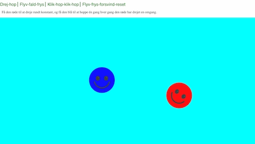

Portfolio
Links til alle opgaver lavet på 1. semester!
02.01.02 - website (Tema 2)

Dette site blev lavet i sammenhæng med studiestartsprøven, og var den første store opgave vi skulle
lave. Vi fik udleveret et wireframe og et layoutdiagram, og så skulle vi bygge et site
op derfra. Opsætningen var allerede blevet bestemt. Det eneste vi måtte bestemme var stylingen.
03.03.01 - kodet site (Tema 3)

I denne opgave skulle vi selv bygge et site op fra bunden, ud fra et selvvalgt emne. Det betød at
wireframe og
layoutdiagram var ting vi nu selv skulle stå for. Vi skulle planlægge og lave research på sitets
indhold og layout igennem et procesdokument, samt adskillige tests og prototyper. Og til sidst
skulle man lave selve sitet ud fra det man havde planlagt og var kommet frem til.
04.04.01 - temaopgave (Tema 4)

I denne opgave skulle vi lave et simpelt spil ved hjælp af CSS-animation og JavaScript. Vi blev
introduceret til CSS-animation, samt JavaScript og hvordan det kunne bidrage til CSS'en i fht. at
lave et forholdsvis funktionelt spil.
Men...
Det her viste sig at være den opgave som jeg havde allersværest ved, fordi jeg nåede faktisk ikke at blive færdig med den i tide, da jeg løb ind i nogle problemer i fht. mit JavScript-kode. Vi skulle have haft omskrevet hele koden til konstanter, og det fik jeg ikke gjordt. Så jeg fik ikke mit spil lavet færdigt, hvilket jeg er sindssyg ærgelig over, fordi jeg havde brugt så lang tid på at lave alle elementerne og havde glædet mig til at se dem i aktion. Selve websitet er heller ikke færdigt, fordi at jeg smed så mange kræfter efter spillet, at jeg rent faktisk ikke nåede det. Så hverken spillet eller sitet er færdigt, og der mangler også nogle billeder. Men i kan stadig få lov til at se hvordan det ser ud ved klikke her eller på billedet.